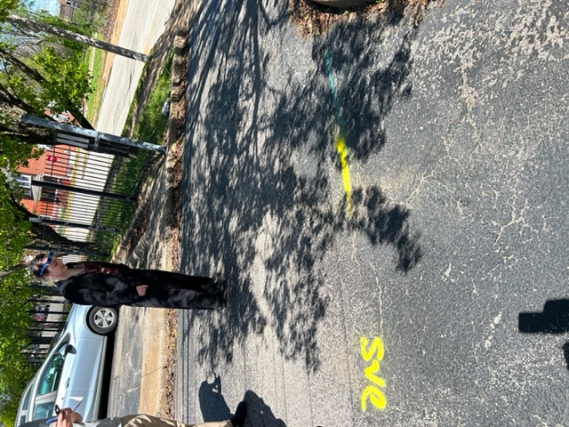
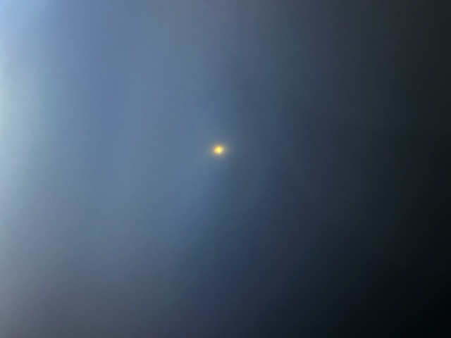
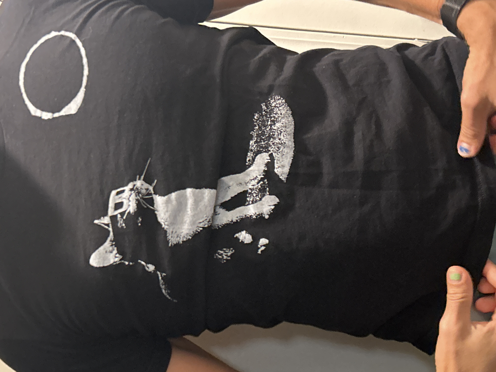
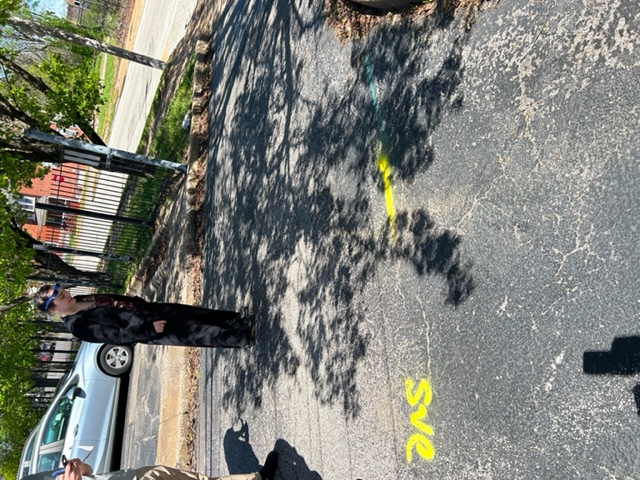
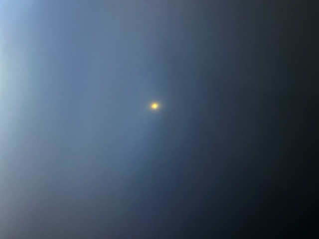
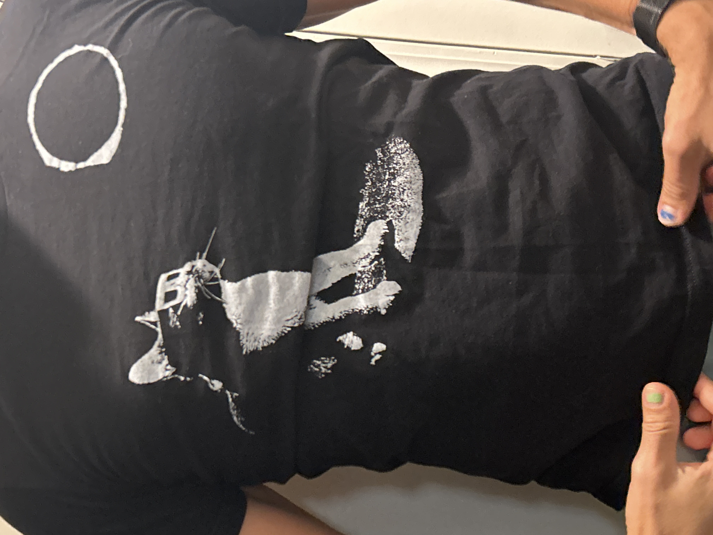

The beginning
The day was April 8th 2024 and 8 coders were working "quietly" at LaunchCode HQ. We knew there was a solar eclipse that would occur that day, but none of us knew what it would lead to. When the sun and the moon met... during business hours, we decided as a collective to go on an adventure. Some of us were scared, but we were drawn to the energy. It's a "once in a lifetime event"... every few years. We go outside, Matt, our TA, was kind enough to purchase us each a pair of glasses. While everyone was looking at the sun, Matt pointed out the pattern of the shadows made by a nearby tree. We were all captivated. It was in that moment that we realized we have forged a brotherhood for life.
The middle
Soon after the event and we had returned to our indoor tasks, Matt created a discord channel for our newly created Brotherhood and the real fun began. Memes and laughs were had by all. As time progressed, a decibel meter was needed to control the antics and associated volume. But we have learned a bit. We want to keep a positive atmosphere and spread the good word.
Event and gatherings have come and gone since the Brotherhood began. Often some combination of group members go off campus for lunch together. There have even been times when our IAs have chosen to eat with us. One time we all met at El Burro Loco after class for happy hour. Rumor has it that a special someone will join us for another happy hour after 🚀 👀
The end... or is it?
There are more eclipses coming up. The next partial solar eclipse will be March 29, 2025. Hopefully there will also be a reunion of LaunchCoders to experience this together again. Each member of our brotherhood brings their own unique style to the group. It simply would not be the same without this exact combination. Without further ado, here is a list of our members in no particular order:
- Logan Rains
- Meghan Judd
- Paul Filipkowski
- Caitlin Smith
- Enkhmunkh “Eggy” Enkhbold
- Kyle Kruzan
- Ricky “Jak” Ramos
- Teresa “Katie T” Ghidey
- Matthew Creek
and our fearless leader
Memories
 





If you want to learn more about eclipses and their patterns then look here! Have a nice day!